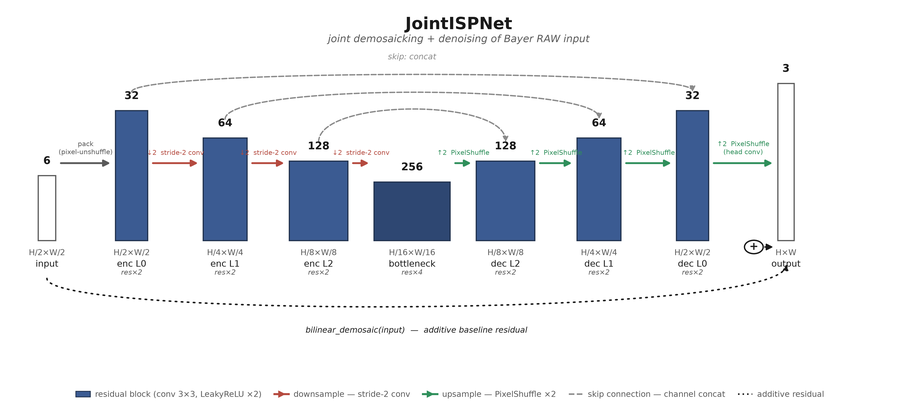
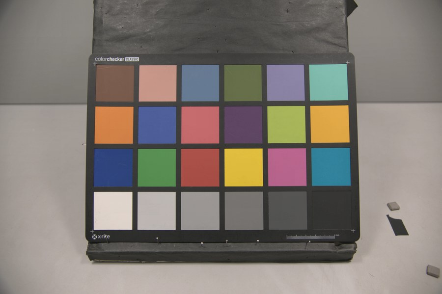
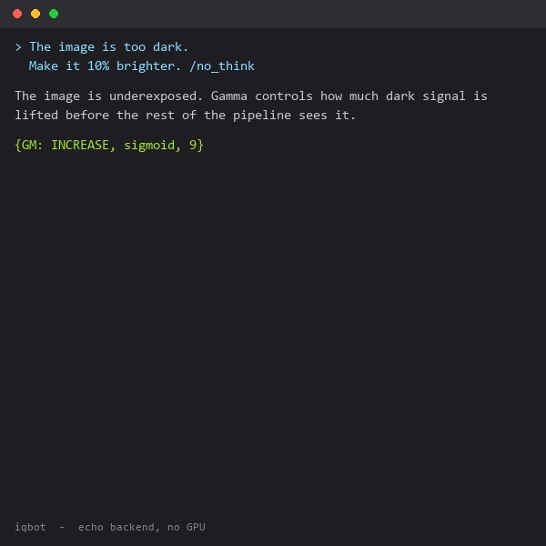

|
Nate Miao 苗宇 I build camera pipelines, from sensor characterization and tuning through to the image quality metrics that decide whether a pipeline is actually good. Most recently I worked on computational photography at Glass Imaging, and before that spent three years on the Qualcomm Spectra ISP team, where I worked on sensor tuning, noise modeling, HDR, and NPU deployment. I hold an M.S. in Biomedical Engineering from Duke and a B.S. in Bioengineering from UC San Diego. Lately I've been interested in learned RAW to RGB pipelines and in using vision-language models to automate subjective image quality review. |
ProjectsTools I've built, mostly to answer a question I had at work. |
|
 |
Neural ISP
code A neural ISP built from scratch: a single U-Net does joint demosaic and denoise on synthetic Bayer RAW, trained with a physically calibrated noise model so one model covers the full ISO range. Beats bilinear demosaic by up to 9.4dB PSNR at low ISO, and beats a real classical pipeline by 3.2dB at high ISO. |
|
 |
Adapted openISP
code A fork of fast-openISP used as the classical-pipeline baseline for Neural ISP. Adds a lens-shading-correction module and a chroma-noise-reduction module, and rewrites the brightness/contrast and hue/saturation stages. |
|
 |
IQ Bot
code An LLM-backed ISP tuning assistant. Describe an image quality problem in plain language and it returns both an explanation and a machine-readable parameter change for the tuning pipeline. Runs as a terminal chat, a REST endpoint, or a token-streaming websocket. |

|
Slanted-Edge MTF Visualizer
code An ISO 12233 slanted-edge MTF tool that shows the intermediate steps (edge fit, ESF, LSF, and the resulting MTF curve) instead of collapsing everything to a single MTF50 number. |

|
HydroMinder
A camera-based hydration tracker. A small excuse to work end-to-end on a vision problem where the capture conditions are genuinely uncontrolled. |
ResearchDetection and image quality assessment, mostly at the point where classical imaging metrics meet learned models. |
|
Scale-Dependent Performance of YOLOv12 and YOLOv11 for Automated Blood Cell Detection: A Controlled Benchmark on BCCD
Yu Miao, Wenxi Tang Preprint, Research Square, 2026 paper A controlled, scale-by-scale benchmark of YOLOv11 and YOLOv12 (nano through extra-large) on the BCCD v3 dataset. Mean accuracy is nearly identical between the two generations overall, but McNemar's test shows YOLOv12 wins at nano scale, YOLOv11 wins at medium and large, and they converge at extra-large. |
|
Does deidentification of data from wearable devices give us a false sense of security? A systematic review
Lucy Chikwetu, Yu Miao, Melat K Woldetensae, Diarra Bell, Daniel M Goldenholz, Jessilyn Dunn The Lancet Digital Health, 2023 paper A systematic review of 72 studies (from 17,625 screened) on reidentification risk in wearable-device data. Deidentification alone is not enough: in several studies, recordings as short as one to 300 seconds were sufficient to reidentify a person. |
|
If your watch watched you eat...
Nate Miao Medium, 2023 article A walkthrough of training models to detect eating from wearable data: physiological signals from an Empatica E4, logistic regression versus a small neural network, with the neural net reaching 98% accuracy. |
|
Template adapted from Jon Barron, layout from Dylan Goetting |